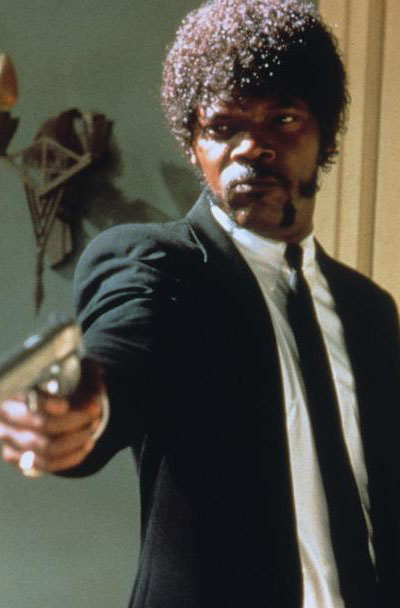

Pulp Fiction
Synopsis
L'odyssée sanglante et burlesque de petits malfrats dans la jungle de Hollywood à travers trois histoires qui s'entremêlent. Dans un restaurant, un couple de jeunes braqueurs, Pumpkin et Yolanda, discutent des risques que comporte leur activité. Deux truands, Jules Winnfield et son ami Vincent Vega, qui revient d'Amsterdam, ont pour mission de récupérer une mallette au contenu mystérieux et de la rapporter à Marsellus Wallace.
Réalisation
Quentin Tarantion
Distribution
Bruce Willis

Samuel L. Jackson
John Travolta